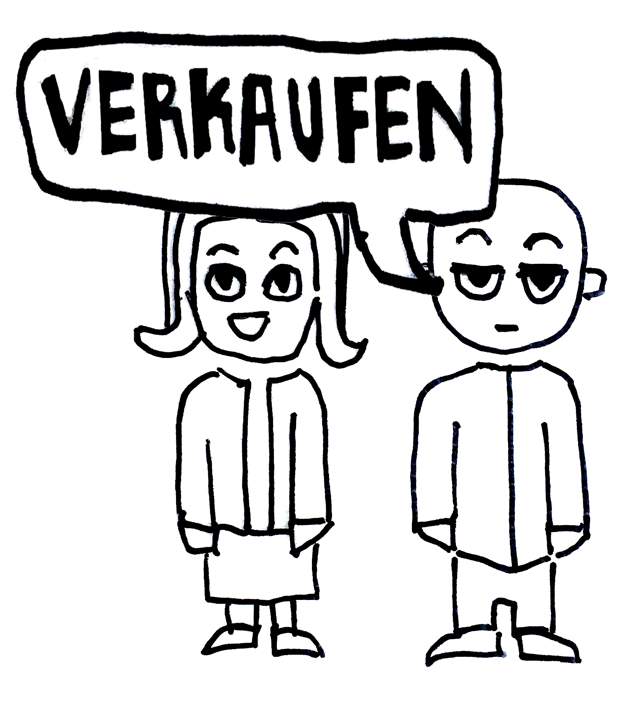

Für die Deutsche Bahn AG, die nahezu allein über alle Bauprozesse in den Bahnhofsbereichen entscheidet, gehören vor allem hohe Mieteinnahmen durch Büro- und Geschäftsflächen und weniger das Komfort der Nutzer*innen zu hauptsächlichen Zielsetzungen. Auch
bei den Sitz- und Wartebereichen am Hauptbahnhof in München scheinen die Bedürfnisse der Nutzer*innen nicht von erstrangiger Priorität zu sein. Die Gestaltung der Sitzbereiche lässt gar auf eine bewusste Beeinflussung des Sitzverhaltens schließen:
Das robuste Bahnsteigmobiliar aus Metall, das die Holzbänke aus den früheren Jahren zunehmend ersetzt, lädt niemanden zum Verweilen ein. Die ergonomische Form der Bänke mit engen Sitzflächen, die das unrechtmäßige Liegen zu unterbinden hilft,
soll ganz im Gegenteil die Wartenden zu einem möglichst kurzen Aufenthalt bewegen. Die Maße der Sitzbänke sind darüber hinaus auf die Körpermaße von »Durchschnittsmenschen« ausgerichtet. Während die Sitze für kleinere Personen oft zu hoch
sind, mangelt es den anderen an Kopf- und Rückenstützen. Soll mit dem unangenehmen Sitz-Erlebnis vielleicht der positive Eindruck der eigentlichen Zugfahrt verstärkt werden? In der dokumentarischen Kurzfilmstudie »Bahnhof SITuated« greifen
wir unterschiedliche Typologien von Sitzbänken auf und halten ihre Nutzung exemplarisch fest.
For Deutsche Bahn AG, which is almost solely responsible for all construction processes in the station areas, high rental income from office and retail spaces take precedence over the comfort of the users. Their needs regarding the seating and waiting
areas at the main railway station in Munich do not appear to be the top priority either. The design of the seating areas even suggests a deliberate design approach: the robust metal furniture, increasingly replacing the wooden benches of earlier
decades, invites no-one to linger. The ergonomic shape of the seats with narrow surface areas preventing unlawful reclining is intended to encourage waiting passengers to spend as little time in the station as possible. In addition, the dimensions
of the seats are premised on the physical dimensions of the “average person”. While the seats are often too high for smaller people, others lack head and back support. Is the unpleasant seating experience perhaps intended to reinforce the
positive impression of the actual train journey? In the short documentary film study “Hauptbahnhof SITuated”, the eye of the camera follows the use of different types of seating to create a situative record.
Die Alte Akademie im Münchener Stadtzentrum gilt als ein der bedeutendsten historischen Bauwerke der Stadt.
Charakteristisch für den denkmalgeschützten Abschnitt des baulichen Komplexes ist der knapp acht Meter breite öffentliche Arkadengang, der an der Neuhauser Straße, einer der teuersten Einkaufsstraßen Deutschlands liegt.
Aufgrund gravierender baulichen Mängel entschied der Freistaat Bayern im Jahr 2012 das Grundstück und die sanierungsbedürftigen Bauten zu verpachten, um sie von der privaten Hand wiederherstellen zu lassen. Den Zuschlag für den Gebäudekomplex
bekam das Immobilienunternehmen Signa. Drei Jahre später wurden im Rahmen eines Architekturwettbewerbs Morger Partner Architekten für den Umbau der Alten Akademie engagiert. Der Vorschlag der Schweizer beinhaltete – obwohl gar nicht Teil des
Wettbewerbs – eine Erweiterung der Geschäftsflächen im Erdgeschoss mit einer partiellen Schließung der Arkaden. Daraufhin stimmte der Stadtrat von München dem Wunsch des Investors zu, ihm zusätzlich einen großen Teil der öffentlichen Arkadenfläche
zur Verfügung zu stellen – kostenlos! Diese Entscheidung führte zu heftigen Protesten. Das Münchner Forum, die Stadtgestaltungskommission und zahlreiche Bürger*innen forderten eine Erhaltung der Arkaden in der bisherigen Form. Im Februar dieses
Jahres, kurz vor der Kommunalwahl 2020 kam es zu einer Überraschung: Signa Group musste den Beschluss akzeptieren, den Großteil der einverleibten Arkaden der Öffentlichkeit zurückzugeben. In unserem Projekt, dem Bürgerversammlungstheater,
verfolgen wir in einer performativen Aktion die einzelnen Stationen der jahrelangen Diskussion. Mit Hilfe der öffentlich verfügbaren Dokumente werden die jeweiligen Positionen und die Argumente der einzelnen Akteure überspitzt dargestellt.
The Alte Akademie (Former Academy) in the centre of Munich is one of the most important historical buildings in the city. One of the important attributes of the building is the public arcade, measuring about eight meters in width. The arcade itself is
located on Neuhauser Straße, one of the most expensive shopping streets in Germany.
Due to serious structural deficiencies, the Free State of Bavaria decided to lease the land and the buildings in 2012 in order to have them restored by the private sector. The contract was granted to the real-estate company Signa. Three
years later, Basel-based architects Morger Partner were hired for the conversion of the Alte Akademie following an architectural competition. Although not part of the competition, the Swiss firm’s proposal included an extension of the commercial
space on the ground floor resulting in a partial closure of the arcades.
Thereafter the Munich City Council agreed to the investor's request to provide them with an additional part of the public arcades -- free of charge. This decision led to fierce protests. The Munich Forum, a group of activists investigating
dubious trades in the city, the Stadtgestaltungskommission (council of planning and design of the city) and numerous citizens insisted the arcades be preserved in their present form. In February of this year, shortly before the local elections
in 2020, negotiations took a surprising turn: the Signa Group had to accept the call to returning the majority of the incorporated arcades to the public.
In our project, the Citizens' Assembly Theatre, we follow the individual stages of the longstanding discussion in a performative action. With the help of publicly available documents, the respective positions and arguments of the individual
actors are presented in a condensed form.
Der Sattlerplatz ist ein der letzten großen innerstädtischen Grundstücke im Besitz der Stadt. Der Platz im Herzen von München, drei Gehminuten vom Marienplatz entfernt, liegt zwischen einem großen Parkhaus, dem “Hirmer-Parkhaus”, und einem leer stehenden
Postamtsgebäude auf der gegenüberliegenden Seite. Nach Ablauf der Erbpacht des Parkhauses im Jahr 2016 standen der Stadt zwar alle Möglichkeiten für zukünftige Planungen offen. Seine zentrale Lage machte den Platz jedoch besonders interessant
für private Investor*innen. Deswegen wurde ein Großteil des Grundstücks nach einer öffentlichen Ausschreibung an den einzigen [sic!] Bieter, die Hirmer Group, für 65 Jahre verpachtet. Die restliche Fläche bekam die Unternehmerfamilie Inselkammer,
der Eigentümer des ehemaligen Postamtes, durch einen Flächentausch.
Im Laufe der folgenden Jahre wurden verschiedene Szenarien für eine mögliche Zukunft des Platzes vorgestellt; unter anderem der Entwurf eines renommierten englischen Architekturbüros, welcher große Aufmerksamkeit erregte. Auf der dem Projekt
gewidmeten Website wird das Vorhaben für das Grundstück als eine Weiterentwicklung eines ehemaligen “Schandflecks der Altstadt” bezeichnet. Trotz einer Vielzahl alternativer Vorschläge von Architekt*innen und Bürgerinitiativen, die eine öffentliche
Nutzung für das Grundstück forderten, gingen die neuen Eigentümer im September 2018 mit einem Entwurf des englischen Stararchitekten Sir Norman Foster an die Öffentlichkeit, in dem die meisten Einwände vernachlässigt wurden. Die darauf folgende
Empörung stellte das gesamte Vergabeverfahren in Frage. Verlangt wird nach wie vor eine transparente Vorgehensweise bei der Neuplanung des Sattlerplatzes, dessen Zukunft bis heute ungewiss bleibt.
In unserem Projekt, dem 16 Bit Point-and-Click-Adventure „Sattler-Saga“, entscheidest Du über das Schicksal eines der letzten städtischen Grundstücke im Münchner Stadtkern. Neben einer kritischen Bestandsaufnahme der aktuellen Geschehnisse
um den Platz tun sich alternative Handlungsstränge der Stadtentwicklung als virtuelle Lichtblicke auf.
Sattler Square is one of the last large inner-city properties owned by the city. Three minutes walk from Marienplatz, it is situated in the heart of Munich. The square can be found between a large multi-storey building known as "Hirmer-Parkhaus" and the
former post office opposite. After the leasehold expired in 2016, the city could have done anything with the site. However, its central position made the square particularly interesting for private investors*. For this reason, a large part
of the site was leased for 65 years to the ‘only’ bidder, the Hirmer Group, following a public tender. The remaining area was given to the Inselkammer family, the owners of the former post office, by means of a land swap.
Over the course of the following years, various scenarios for a possible future of the square were presented by the investors. Among others, the design by a renowned English architectural office attracted a great deal of attention. On
the project website, which gives regular updates, the plan for Sattler square is described as an enhancement of a former "eyesore in the old town". Despite numerous alternative proposals from architects* and citizens' groups demanding a public
use of the site, the new owners published a design by English star architect Sir Norman Foster in September 2018, ignoring most of the objections. The ensuing indignation questioned the entire tendering procedure. The call for a transparent
procedure in the replanning of the Sattlerplatz still continues, while its future remains uncertain.
"Sattler-Saga", the 16 bit point-and-click adventure, lets you decide on the fate of one of the last municipal plots in the city center of Munich. In addition to a critical survey of current events around the site, alternatives in urban
development emerge as virtual rays of hope.
Das über München hinaus bekannte Sozialprojekt Bellevue di Monaco beinhaltet eine Wohnstätte für jugendliche Geflüchtete sowie ein städtisches Kulturzentrum mit einem Café-Betrieb. Das einzigartige Projekt wurde in Anbetracht der öffentlichen Diskussion
um bezahlbare Wohn- und Kulturräume in München von einer befreundeten Aktivist*innengruppe um 2014 initiiert. Zunächst galt es, die renovierungsbedürftige Gebäudegruppe in der Müllerstraße 2-6 vor dem drohenden Abriss zu bewahren. Über Nacht
starteten die Aktivist*innen der »Goldgrund Immobilien Organisation« eine Gorilla-Renovierungsaktion. Mit dieser und weiteren Maßnahmen wie zum Beispiel der Immobilienanzeige »L’Arche de Munich – Ihre ganz eigene Münchner Freiheit« erregten
sie eine große öffentliche Aufmerksamkeit, die für die Durchsetzung des beabsichtigten Projekts von entscheidender Bedeutung war.
Vor dem Hintergrund der Flüchtlingskrise konnte die Stadt schließlich von der Idee überzeugt werden, alle Bauten zu erhalten und für die nächsten 40 Jahre an die hierfür gegründete Sozialgenossenschaft zu verpachten. Seit Abschluss der
Renovierungsarbeiten im Sommer 2018 hat sich das Bellevue di Monaco als ein bedeutender Diskussionsraum für das Thema Flucht, Migration und soziale Gerechtigkeit etabliert.
Unser Bellevue Aktivismus-Kit setzt sich mit der Fragestellung auseinander, wie der exemplarische Erfolg des Bellevue di Monaco für weitere ähnliche Vorhaben von Nutzen sein könnte. Anhand der folgenden Analyse werden Werkzeuge, Tools
und Möglichkeiten, aber auch Grenzen der aktivistischen Projekte aufgezeigt und an die Bürger*innen weitergegeben.
The well-known Bellevue di Monaco project at Müllerstraße 2-6 includes residential spaces for young refugees and a multicultural centre with a café. This unique project was initiated in 2014 by a group of friends and activists, prompted by the public
discussion about the lack of affordable living and cultural spaces in the city of Munich. Their initial goal was to save the buildings from the threat of demolition. Overnight, the activists of the “Goldgrund Immobilien Organisation” started
a gorilla-renovation campaign. With this and other interventions, such as the real estate advertisement “L'Arche de Munich - Ihre ganz eigene Münchner Freiheit” (The Munich Ark-Arse – your very own Munich Freedom), they attracted a great deal
of public attention, which was crucial for the implementation of the Bellevue project itself.
Against the background of the refugee crisis, the city was finally persuaded to preserve all the buildings and lease them for the next 40 years to the social cooperative founded for this purpose. Since the completion of the renovation
work in the summer of 2018, the Bellevue di Monaco has established itself as an important discussion space for the topics of migration and social equality.
Our Bellevue Activism Kit addresses the question of how the exemplary success of the Bellevue di Monaco could be of benefit to those hoping to initiate other similar projects. Based on the following analysis, the tools, opportunities,
but also the limits of activist purposes are pointed out to enable others to learn from the experience gathered here.
Eine der teuersten Wohnimmobilien Münchens findet man in der Müllerstraße 7, ganz in der Nähe des beliebten und belebten Gärtnerplatzes. Die Wohnanlage »The Seven« befindet sich am Ort des ehemaligen städtischen Heizkraftwerks. Nach der Stilllegung des
Kraftwerksbetriebs verkauften die Stadtwerke München im Jahr 2007 das Grundstück zügig (und ohne Absprache mit dem Münchner Stadtrat) an die LBBW-Immobilien, die Immobilientochter der Landesbank Baden-Württemberg. Das Berliner Architekturbüro
Léon Wohlhage plante in Kooperation mit Alpha Invest Projekt GmbH auf dem Gelände zwischen 2007 und 2014 ein Komplex aus drei Wohn- und Bürobauten, wobei im ehemaligen Maschinenturm des Kraftwerks Luxuswohnungen untergebracht sind, die rund
um die Uhr von einem Concierge bewacht werden.
Im Jahr 2010, nachdem das Grundstück an die Investoren veräußert wurde, musste die Stadt einen Teil von der nun privaten Fläche für 5,2 Mio. Euro zurückkaufen, um den bestehenden Bedarf an öffentlichen Kita-Plätzen im Quartier zu decken.
Demzufolge erhielt die Kita den Ruf des »teuersten Kindergarten Deutschlands«.
In unserem Projekt reflektieren wir mithilfe der »Postkarten« den Widerspruch zwischen der Ignoranz der Stadt und dem Versprechen der Investoren, »ein Stück Innenstadt für die Öffentlichkeit wiedergewonnen«, und dem tatsächlichen Gentrifizierungsprozessen,
die mit einem solchen Projekten beschleunigt werden.
One of the most expensive residential properties in Munich is located at Müllerstraße 7, very close to the popular and lively Gärtnerplatz. The residential complex “The Seven” is situated on the site of the former municipal power plant. After shutting
down the plant, Stadtwerke München sold the property quite quickly (and without consulting Munich City Council) in 2007 to LBBW-Immobilien, the real estate subsidiary of Landesbank Baden-Württemberg. Between 2007 and 2014, the Berlin architectural
office Léon Wohlhage in cooperation with Alpha Invest Projekt GmbH, planned and built a complex of three residential and office buildings on the site, with luxury apartments housed in the former machine tower of the power plant and guarded
around the clock.
In 2010, after the site was sold to the investors, the city had to buy back part of the now private area for EUR 5.2 million in order to meet the existing demand for public daycare places in the district. As a result, the day care centre
was accorded the dubious honour of being the “most expensive kindergarden in Germany”.
In our project, we use “postcards” to reflect on the contradiction between the city’s ignorance as well as the investors’ broken promise to “regain a piece of the city centre for the public” and the actual gentrification processes accelerated
by such a project.
„The Seven ist das architektonische Äquivalent zu einem bulligen Sportwagen.“(2)
„Von Gentrifizierung kann man nicht sprechen, kein einziger Mieter wird verdrängt“ (4)
„…ein Stück Innenstadt [wird] für die Öffentlichkeit wiedergewonnen“ (1)
“Der Turm prägt das Viertel und bietet mit seinem grünen Vorplatz und dem schönen Baumbestand großes Potential für eine neue, post-industrielle Nutzung.” (1)
„Die meisten Turmbewohner wollen ihren Namen nicht publik machen, weil sie Angst vor Neidern haben.“ (3)
„Dass Menschen mit Geld und Geschmack zunehmend gern oben statt unten wohnen, muss wohl das sein, was man Paradigmenwechsel nennt“(5)
„Diese Wohnung im The Seven bringt die Bedürfnisse unserer Zeit auf einzigartige Weise auf den Punkt. Sie bietet ein Zuhause in stilvollster Umgebung samt Tiefgarage, Lift, repräsentativem Foyer und Concierge.“ (6)
„Die Privatisierung des Rundblicks über die Innenstadt. Ursprünglich hatte die verlockende Begründung für den Fortbestand des Heizkraftwerksturms geheißen, hier könne ein Obergeschoss für die Öffentlichkeit mit Café über München reserviert
werden.“ (7)
„Als verantwortungsvolles und nachhaltige orientiertes Unternehmen leisten wir durch Entwicklung und Verkauf nicht betriebsnotwendiger Immobilien einen kontinuierlichen Beitrag zu einer positiven Entwicklung Münchens und zum Wohle seiner
Bürger. (8)
„Die Eigentümerschaft scheint hier inmitten des lebhaften Stadtviertels ein großes Abschottungsbedürfnis zu haben, wie die Einzäunung des Geländes, eine „gated community“, zeigt.“ (9)
(1) LW, Projektbeschreibung
(2) „The Seven“; Der Teuer-Turm ist enthüllt, AZ, 03.07.2013
(3) „22000 Euro pro Quadratmeter: Der Millionen-Turm“ AZ 13.12.2011
(4) Zitat Sattler aus dem Artikel „Aussicht mit Loft“ SZ, 29.06.2020
(5) „Luft nach oben“ SZ, 07.06.2019
(6) Immoscout, Scout-ID: 97993712
(7) Standpunkte 12/2010
(8) Stadtwerke München Homepage:
https://www.swm.de/privatkunden/unternehmen/immobilien/projektentwicklung.html; Zugriff 06.07.2020
(9) Standpunkte 12/2018
"The Seven is the architectural equivalent of a muscle car."(2)
"One cannot speak of gentrification since not a single tenant is being forced out." (4)
"…a piece of the city centre will be regained for the public" (1)
"The tower characterises the quarter, and with its green forecourt and beautiful trees it offers a great potential for a new, post-industrial use." (1)
"The most of the tower’s inhabitants do not want their name out there because they are afraid of envy." (3)
"That people with money and taste increasingly prefer to live on upper rather than lower floors we would have to call a paradigm shift" (5)
"This apartment at The Seven uniquely addresses the needs of our time. It offers a home in the most stylish surroundings including underground parking, elevator, prestigious foyer and concierge". (6)
“The privatization of the panoramic view on downtown. Originally, the tempting justification for the continued existence of the power plant tower was that an upper floor could be reserved for the public with a café overlooking Munich.”
(7)
“As a responsible and sustainability oriented company, we make a continuous contribution to the positive development of Munich and to the well-being of its citizens by developing and selling of real estate not required for operations.”
(8)
“Ownership seems to have a great need for separation here in the middle of this lively district, as is evident by the fencing off of the site as a ‘gated community’.” (9)
(1) LW, Projektbeschreibung
(2) „The Seven“; Der Teuer-Turm ist enthüllt, AZ, 03.07.2013
(3) „22000 Euro pro Quadratmeter: Der Millionen-Turm“ AZ 13.12.2011
(4) Zitat Sattler aus dem Artikel „Aussicht mit Loft“ SZ, 29.06.2020
(5) „Luft nach oben“ SZ, 07.06.2019
(6) Immoscout, Scout-ID: 97993712
(7) Standpunkte 12/2010
(8) Stadtwerke München Homepage:
https://www.swm.de/privatkunden/unternehmen/immobilien/projektentwicklung.html; Zugriff 06.07.2020
(9) Standpunkte 12/2018
Die Münchner Verkehrsgesellschaft (MVG) lässt in einigen der Münchner U-Bahn-Stationen klassische Musik abspielen. Zwei Studierenden, Tao und Stefan, sind diesem Phänomen nachgegangen und teilen ihre Erkenntnisse in diesem Podcast. Dieser ist in sechs
Abschnitte unterteilt, in denen sie die psychologischen Auswirkungen von Musik im Untergrund, wie z.B. das subjektive Gefühl der Sicherheit, erläutern oder über die Wahrnehmung der Inneneinrichtungen der Stationen diskutieren. Die einzelnen
Stationen behandeln spezifische Themen rund um die U-Bahn Musik und können daher ohne eine chronologische Reihenfolge angehört werden.
"Hallo, wir sind Tao und Stefan. Wir studieren Architektur in München und haben die klassische Musik untersucht, die die Münchner Verkehrsgesellschaft (MVG) in einigen Münchner U-Bahnhöfen spielt. Alle, die in München leben oder mal hier
waren, haben sicher die Musik bemerkt, die in den U-Bahnhöfen im Hintergrund spielt; einigen gefällt sie vielleicht, anderen nicht. In diesem Podcast werden wir der Frage nach möglichen Beweggründen für das Abspielen der klassischen Musik
in den U-Bahnhöfen nachgehen, und außerdem schauen, was die Menschen davon halten, nachdem sie jahrelang die gleiche Wiedergabeliste gehört haben. Kommen Sie mit auf diese Reise durch München einen kleinen Abstecher nach Tokio!
In some of Munich’s subway stations the Munich Transport Corporation (MVG) broadcasts classical music. Two students, Tao and Stefan, investigated this phenomenon and have shared what they’ve learned in this podcast. They will shed light on the reasons
the MVG actually plays classical music and they will further explain the psychological effects and of music in subway stations, such as a subjective feeling of safety or the perception of the station’s interior design. They will also take
a look at Japan's individual metro stations’ jingles. Moreover, Stefan and Tao have noticed a wear-out effect of the classical music loop that the MVG has been broadcasting for years and suggest alternatives, especially during rush hours.
“Hello, we are Tao and Stefan. We study architecture in Munich and lately we’ve been investigating the fact that the Munich Transport Corporation (MVG) plays classical music in some of Munich’s subway stations. Everyone who lives in Munich
or has been here before has surely noticed the music playing in the background in subway stations; some may like it and some may not. In this podcast we will talk about possible motivations for the MVG broadcasting classical music in subway
stations and what people think of it after having listened to the same playlist for years. Come along on this journey with us through Munich and also a little excursion to Tokyo!”
„Die Wartezeit kann richtig angenehm sein und viel schneller vorbeigehen, wenn Musik dabei ist.“
„Hauptsache es klingt gut.“
„Der Bahnhof wird zum Konzertsaal.“
„Musik darf nicht zur omnipräsenten Zwangsbeweisung werden. Schließlich fährt niemand mit der MVG um Musik zu hören.“
Mit Sicherheit hat sich nun nach elf Jahren Endlosschleife aber ein Abnutzungseffekt eingestellt, denn es sind nur zwölf verschiedene Werke von Vivaldis 4 Jahreszeiten über Mozarts Posthorn-Serenade über Strauss des 2. Kaiserwalzer bis
hin zu Tschaikowskis Serenade in C-Dur die in einer 300 Minuten schleife immer von neuen digital abgespielt werden. Wer jeden Tag zur selben Zeit am selben Bahnsteig einsteigt, bekommt gar immer dasselbe Stück zu hören.
S: "Letztlich will die MVG ein Gefühl der Sicherheit erzeugen, indem sie in den U-Bahn-Stationen Musik spielen lässt, die sonst unbehaglich wirken. Dies ist jedoch nur ein rein subjektives Gefühl der Sicherheit, das möglicherweise nicht
der Realität entspricht. Dank des Wachpersonals kann objektive Sicherheit erreicht werden. Dennoch stellt sich die Frage, ob das Spielen klassischer Musik das subjektive Sicherheitsempfinden wirklich beeinflussen kann".
„Die Wartezeit kann richtig angenehm sein und viel schneller vorbeigehen, wenn Musik dabei ist.“
„Hauptsache es klingt gut.“
„Der Bahnhof wird zum Konzertsaal.“
„Musik darf nicht zur omnipräsenten Zwangsbeweisung werden. Schließlich fährt niemand mit der MVG um Musik zu hören.“
Mit Sicherheit hat sich nun nach elf Jahren Endlosschleife aber ein Abnutzungseffekt eingestellt, denn es sind nur zwölf verschiedene Werke von Vivaldis 4 Jahreszeiten über Mozarts Posthorn-Serenade über Strauss des 2. Kaiserwalzer bis
hin zu Tschaikowskis Serenade in C-Dur die in einer 300 Minuten schleife immer von neuen digital abgespielt werden. Wer jeden Tag zur selben Zeit am selben Bahnsteig einsteigt, bekommt gar immer dasselbe Stück zu hören.
S: "Letztlich will die MVG ein Gefühl der Sicherheit erzeugen, indem sie in den U-Bahn-Stationen Musik spielen lässt, die sonst unbehaglich wirken. Dies ist jedoch nur ein rein subjektives Gefühl der Sicherheit, das möglicherweise nicht
der Realität entspricht. Dank des Wachpersonals kann objektive Sicherheit erreicht werden. Dennoch stellt sich die Frage, ob das Spielen klassischer Musik das subjektive Sicherheitsempfinden wirklich beeinflussen kann".
In ganz Japan findet man Bahnhöfe, an denen eine individuelle sieben sekündige Melodie abgespielt wird. (Melodie wird abgespielt)
Und wenn Sie schon mal mit der U-Bahn in Tokyo gefahren sind, dann haben Sie sicherlich auch schon die speziell von Minoru Mukaiya komponierten Melodien gehört. (Melodie wird abgespielt)
T: „Was sagst du dazu, dass Musik als räumliches Gestaltungsmittel genutzt wird? Und wie findest du es, dass in allen U-Bahnhöfen überall die gleiche Musik gespielt wird? Passt das Fenn überhaupt zusammen?“
[…]
S: „Naja, ich finde beispielsweise nicht, dass der Bahnhof der Münchner Freiheit mit den grellen Farben und Mozarts Serenade unbedingt gut zusammenpassen. Wenn man Musik als Gestaltungsmittel nutzen möchte, dann muss man schon bedenken,
dass jede Haltestelle ihre eigene Identität hat.“
[…]
T: „Und nun, schließe deine Augen und stelle dir diesen U-Bahnhof mit eigens dafür komponierter Musik vor.“ (Musik spielt)
In train and subway stations all over Japan, you’re likely to hear a fully composed seven second jingle, that is uniquely written for that station. (Jingle playing)
And if you’re one of the millions of Tokyo's metro riders, you’ve probably heard one of these jingles composed by Minoru Mukaiya. (Jingle playing)
T: “What do you think about the fact that music can be seen as a kind of interior design? Moreover, do you like the fact that the same playlist is used in all Munich’s various subway stations; does the same music fit every station?“
[…]
S: “Well, I don’t think that, for instance, Münchner Freiheit station’s design with its dazzling colors and Mozart’s Serenades really work together. I think if you want to use music as a design tool then it has to consider each station
individually and perhaps create their own identity.”
[…]
T: “Now, close your eyes and picture the subway station with music composed especially for the individual station.” (Music playing)
S: „Auch wenn Musik nicht individuell an den Raum angepasst ist, kann sie dennoch Assoziationen erwecken. Wenn ich klassische Musik höre, dann denke ich sofort an die Staatsoper, das Gärtnerplatztheater, das Prinzregententheater oder an den Gasteig. Kulturbauten
aus unterschiedlichsten Epochen, die gar nie pompös und teuer genug sein konnten. Dadurch schaue ich vielleicht ein bisschen darüber hinweg, dass die Münchner U-Bahnhöfe vielleicht keine gestalterische Meisterleistungen sind. Der Raum kommt
mir schöner vor, weil ich an schöne Räume denke. Es ist eine günstige Methode durch solche Assoziationen den Raum aufzuwerten.“
[…]
S: „Eine weitere Assoziationen weckt Hintergrundmusik bei mir allerdings auch, und zwar die von Shopping Malls. Der Stachus war mal eine ganz normale Haltestelle und jetzt ist es ein Shopping Center im Untergrund. Das ist aber auch ein
extremes Beispiel. Denn um ehrlich zu sein sind es eher die Geschäfte, Bäckereien und Restaurants, welche die Ähnlichkeit zum Shopping Center verstärken.“
S: “Even if music is not individually adapted to a station’s character, it has the power to evoke associations. When I listen to classical music, I immediately think of the State Opera House, the Gärtnerplatz Theater, the Prinzregenten Theater or the
Gasteig. Cultural architecture from different eras that can never be grand or fabulous enough. This prompts me to overlook the fact that Munich’s subway stations aren’t exactly architectural masterpieces; they seem more beautiful than they
actually are because I’m thinking of those other spaces. It’s a cheap way of pimping up the subway stations by association.”
[…]
S: “Another association that music in subway stations evokes in me is a shopping mall. Karlsplatz (Stachus)was once a normal subway and train station while today it is more of a shopping center with music playing in the background. This
is Munich’s most extreme example. But to be honest, it’s not only music that transforms stations more into malls but mainly the presence of shops, bakeries and restaurants.”
S: „Also mich nervt wirklich, wenn während der Rush Hour alle so langsam gehen. Und ich kann selbst nicht schneller gehen, weil zu viele Leute im weg sind. Darum habe ich mir eine Lösung überlegt. Was wäre wenn die MVG super schnellen Jazz (Jazz Musik
läuft) oder speed metal (Speed metal läuft) oder Ähnliches einspielen könnte. Dann würden sich die Leuchte ganz von alleine schneller bewegen. Das wäre doch toll.“
T: „Wir spielen nun ein paar Beispiele.“ (Musik spielt)
S: “What really bugs me is when everyone is walking so slowly during rush-hour. And I can’t walk faster because there are people everywhere. So I thought of a solution. What if the MVG broadcast really fast music during the rush-hour so that everyone
would automatically move faster. Some sort of fast jazz or speed metal. That would be great, wouldn’t it?”
T: “We will now play some examples.” (Music playing)
T: „Ich bin mir ziemlich sicher, dass die MVG Musik in den U-Bahnhöfen abspielt, um ungewünschte Gruppen fernzuhalten, insbesondere nachts. Ich persönlich könnte mit dieser Hintergrundmusik nicht schlafen.“
Harry, ein ehemaliger Klavierbauer und Dirigent, der seit 1981auf der Straße lebt hört bei den immer wieder gleichen Melodien lieber weg. Er fände mehr von Bach oder auch von einem Männerchor wäre toll. Er ist froh, dass nicht an allen
Haltestellen Musik läuft. Es muss zwischendurch auch mal still sein.
T: “I am pretty sure that the MVG plays music in order to prevent undesirable groups hanging out in the stations, especially at night. I personally would not be able to sleep with music in the background.”
Harry, a former piano maker and conductor has been living on the street since 1981. He says he dislikes listening to the same recordings over and over. Moreover he suggests more Bach or even a men’s choir. That would be nice. He is happy
that classical music is not broadcast in every subway station. Sometimes it should be silent.
xerox ideology.doc
map
impressum

The project "Xerox Ideology" investigates new conceptualizations of common spaces. It discusses how we can and should reconsider the city as a space of multitude. In particular, the new pandemic normality forces us to define new areas as well as to approach
new concepts of commons.
Since the building practice cannot emancipate from economic and societal imperatives, we are particularly interested in schemes and structures which enable a critical narrative: We seek a redefinition of the discipline
from the leverage point of alternative media. In contrast to the normative practice of architecture, "Xerox Ideology" operates with the resources of critical design. With reference to subversive forms in art and protest
culture, the project takes a position between activism, ad hoc, and the practice of everyday life.
The fanzine – or its contemporary digital correlate – becomes our instrument of political dissent. To situate this medium in the architectural debate, we pursue a strategic inversion of form and content: focussing on
the subversive form that precedes and preconfigures the project itself. Therefore, the "Xerox Ideology" borrows structural principles from non-commercial and anti-mainstream media: precarious graphic design, low-cost production
(xerox!), and easy distribution.
"Xerox Ideology" has been developed in collaboration with a group of architecture students of the Technical University of Munich. During the project, tackled before the COVID-19 crisis, we investigated collective needs
and individual desires manifested spatially in the city of Munich. On the basis of six case studies, various ideas on commons were examined in order to place the discussion in the context of concrete political and economic
constraints imposed by the urban space.
1 Hauptbahnhof
2 Alte Akademie
3 Sattler Saga
4 Aktivismuskit
5 The Seven
6 U-Bahnmusik